Due diligence para entrada societária · Maio 2026
6 repositórios · 12 dimensões · Escala 1–10
Mono-repo: backend NestJS + dashboard React. Produto principal da marca. Railway + R2.
SaaS multi-tenant para construtoras: gestão de empreendimentos, contratos, parcelas e portal do cliente. NestJS + Next.js 15.
SaaS de automação WhatsApp + CRM com IA: engagement engine, campanhas, follow-ups. NestJS + Next.js 16 + BullMQ.
IA para corretores: analisa conversas de WhatsApp, classifica leads e sugere respostas. Next.js 16 full-stack + Stripe.
Geração de leads via Google Places: busca empresas próximas e desbloqueia contatos com créditos. Express.js + React.
Plataforma de landing pages imobiliárias: multi-tenant, domínio próprio por empreendimento, roteamento por hostname. Next.js 16.
Escala 1–10 · média das 12 dimensões por repo
Nenhum repositório atingiu nível adequado (≥ 6,0). O teto atual é 4,7.
5 dos 6 repos têm ao menos 1 achado Crítico ativo.
A base tecnológica — stack moderna, Railway, R2 — é sólida para evoluir.
backend/.env com credenciais reais de produção em repo público:
Google Places API Key (billable), DATABASE_URL Railway, JWT secret fraco.
twilio_2FA_recovery_code.txt e qr.png (sessão WhatsApp)
versionados em repo público.
.env do backend rastreado; node_modules/ e
dist/ versionados.
origin: true; uploads em disco local incompatíveis
com filesystem ephemeral do Railway.
app.use(cors()) sem restrição; node_modules/
versionado.
.env e artefatos versionados no gitorigin: true por fallbackassertProductionEnvironmentSafety no bootconsole.log(userId) no middleware (PII)node_modules/ versionado (supply chain)
node_modules, restringir CORS por whitelist em todos os
produtos e migrar uploads do orka-home para R2.Railway
Compute único
Backend · Frontend · Postgres · Redis
Cloudflare R2
Object storage
Uploads · Arquivos · Assets
Cloudflare
DNS · CDN · WAF
TLS auto · Rate limit · DDoS
Railway já é o backend de todos os produtos — a consolidação do frontend elimina a conta Vercel sem custo adicional relevante.
R2 mantido exclusivamente para armazenamento de objetos (S3-compatible) — sem migração de dados necessária.
Cada produto do grupo foi construído de forma independente — sem tokens de design, componentes, paleta ou tipografia compartilhados. O resultado é inconsistência visual entre produtos da mesma marca.
Toda feature começa com um Product Requirements Document — problema, escopo, critério de aceite, tradeoffs. Versionado ao lado do código que descreve.
Antes de qualquer linha de implementação, a IA traduz o PRD em testes. Os testes descrevem o comportamento esperado e viram o contrato objetivo da feature.
A IA escreve o mínimo de código necessário para os testes passarem.
Testes rodam, falhas são analisadas, código é refinado em ciclos curtos. A feature está pronta quando está robusta — não apenas "funcionando".
Ao fim do ciclo, decisões de implementação, tradeoffs descobertos e mudanças de escopo voltam ao documento. PRD nunca fica desatualizado — vive com o código.
Somos o que repetidamente fazemos.
A excelência, portanto, não é um ato,
mas um hábito.